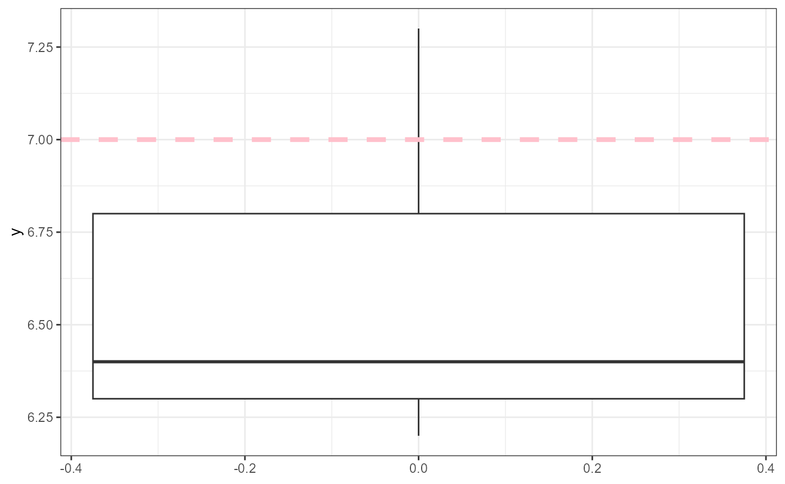
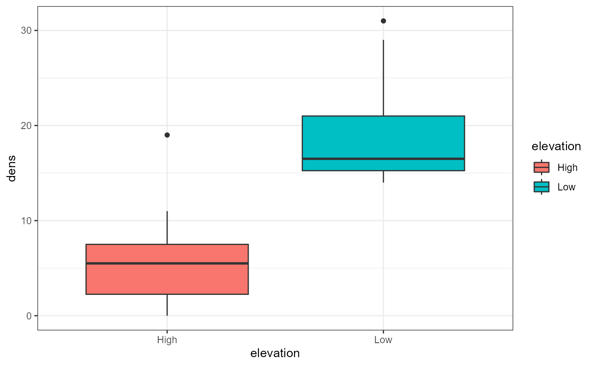
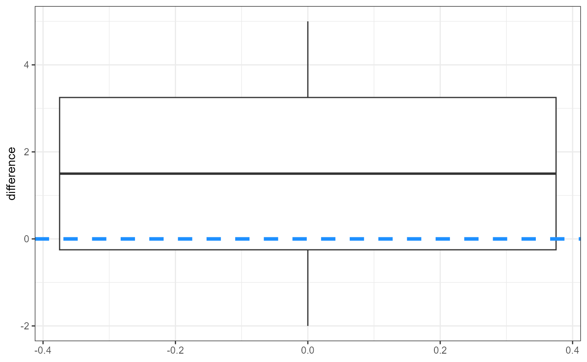
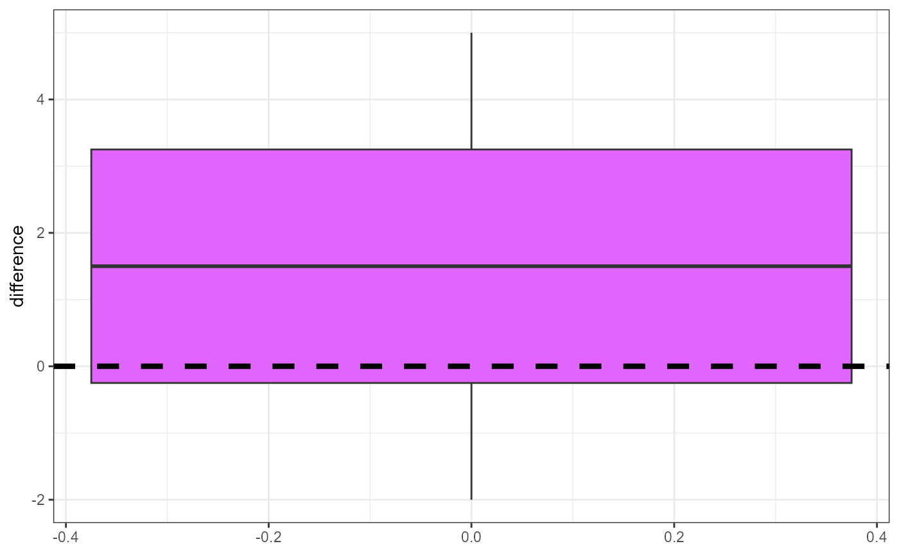

vignettes/articles/lab_08_t-tests.Rmd
lab_08_t-tests.RmdThis lab will explore formal hypothesis testing by considering classic t-tests from a linear modelling perspective.
Recall that the general structure of a t-test is as follows:
\[\large t = \frac{difference}{SE}\]
You may expect that streams around Grand Junction should have an approximately neutral pH of 7. Let’s look at some simulated data and formally tests whether or not the average stream pH is significantly different from 7. Here, the value of interest is \(\mu_0 = 7\)
We can state our hypotheses formally using Null and Alternatives as follows:
\[H_0: \mu = 7\] \[H_A: \mu \ne 7\]
Since our Alternative hypothesis is \(\ne\) this is a 2-tailed test. In other words we have to account for the fact that pH could be higher or lower than our null value of 7.
We can express this as a simple linear model:
\[y_i = \mu + \epsilon_i\] where \(y_i\) is a single observation of stream pH, \(\mu\) is the population mean, and \(\epsilon_i\) is the deviation from the expected value. Further, we expect the deviations to be distributed normally:
\[\epsilon \sim N(0, \sigma)\]
Let’s look at some simulated data, and load it into R as a vector.
# simulated data values
y <- c(6.2, 6.8, 7.3, 6.4, 6.3)First, let’s plot the data. For this example, we will use
geom_boxplot(). Becasue ggplot() requires the
data object to be a data.frame, we will quickly convert our vector
y inside of the function. We will also add a dashed line to
indicate where our value of interest (7) is.
ggplot(data = data.frame(y = y),
aes(y = y)) +
geom_boxplot() +
geom_hline(yintercept = 7,
size = 1.5,
linetype = "dashed",
color = "pink") +
theme_bw()## Warning: Using `size` aesthetic for lines was deprecated in ggplot2 3.4.0.
## ℹ Please use `linewidth` instead.
## This warning is displayed once every 8 hours.
## Call `lifecycle::last_lifecycle_warnings()` to see where this warning was
## generated.
For the one-sample t-test, we will calculate all necessary variables
manually, and then compare it to using the lm()
function.
Recall that we calculate a one-sample t-statistic with the following:
\[t_{statistic} =\frac{\bar{y} - \mu_{0} }{SEM_y}\]
Where \(\bar{y}\) is the mean, \(\mu_0\) is the value of interest (pH = 7) and \(SEM\) is calculated as \(s / \sqrt(n)\). Let’s calculate these values in R and store them as objects.
y_bar <- mean(y)
y_bar## [1] 6.6
mu_0 <- 7
mu_0## [1] 7
y_sd <- sd(y)
y_sd## [1] 0.4527693## [1] 0.2024846Now let’s calculate the t-statistic
t_stat <- (y_bar - mu_0) / y_sem
t_stat## [1] -1.975459Now we need to calculate the t-critical value for this
t-distribution. We can use the qt() function. This is
similar to the qnorm() function we used previously for the
normal distribution, but now we are looking at the t-distribution. for
qt(), we need to supply the quantile (0.025) and the
degrees of freedom (df = n - 1 = 4). The standard \(\alpha\) value is 0.05, but since this is a
2-tailed test we have to divide it by 2 (hence 0.025) in order to
account for both tails.
## [1] -2.78Is our t_stat value \(\ge\) our critical value? Note that we are
going to use the absolute values so that we do not need to worry about
using the proper > or < with negative numbers.
## [1] FALSEIt is not, so we would fail to reject our null hypothesis. We can
also calculate a p-value for our t_critical value by using
the pt() function. We first calculate the probability of
observing out t_stat, and then multiply it by 2 since this
is a 2-tailed test. Also, we are going to use the absolute value of our
t_stat and set the lower.tail = FALSE argument
within pt(). This ensures that we don’t need to worry about
mixing up our + and - signs when calculating a p-value.
## [1] 0.1194206Based on our data, we estimate that the mean (\(\pm\) SE) pH in streams near Grand Junction is 6.6 (\(\pm\) 0.2), and we fail to reject the null hypothesis that stream pH is equal to 7 (\(t_{statistic} = -1.96, df = 4, p = 0.12\)).
lm()
We can use the lm() function to automatically calculate
our values and test the hypothesis formally.
Recall that y is our observations of data, and our null
value is 7. When we run a one-sample t-test in lm(), we
have to subtract the value of interest from our data. Review the
numerator in the formula for the one-sample t-statistic above.
##
## Call:
## lm(formula = y - mu_0 ~ 1)
##
## Residuals:
## 1 2 3 4 5
## -0.4 0.2 0.7 -0.2 -0.3
##
## Coefficients:
## Estimate Std. Error t value Pr(>|t|)
## (Intercept) -0.4000 0.2025 -1.975 0.119
##
## Residual standard error: 0.4528 on 4 degrees of freedomWe can also reprint the values we calculated by hand and locate them
in the output table (note that we are subtracting mu_0 from y_bar to put
it on the same scale as our (Intercept) estimate in the
table):
y_bar - mu_0## [1] -0.4
y_sd## [1] 0.4527693
y_sem## [1] 0.2024846
t_crit## [1] -2.776445
one_samp_p_val## [1] 0.1194206Is the density of trees at high elevations different from low elevations?
\[H_0: \mu_{high} = \mu_{low}\] \[H_A: \mu_{high} \ne \mu_{low}\] ## Data
We will make a data.frame and call it tree. Normally,
you should type out everything in this class for practice, but copy and
paste the following code in order to avoid typing a mistake.
tree <- data.frame(
elevation = rep(c("Low", "High"), each = 10),
dens = c(16, 14, 18, 17, 29, 31, 14, 16, 22, 15, 2, 11, 6, 8, 0, 3, 19, 1, 6, 5))Here, dens is the density of trees, and was simulated
for this exercise. Let’s once again plot our data to visualize how they
are distributed.
ggplot(tree,
aes(x = elevation,
y = dens,
fill = elevation))+
geom_boxplot() +
theme_bw()
Calculate statistics with dplyr. Recall that for a two-sample t-test we need the:
\[\large t = \frac{\bar{y}_1 -\bar{y}_2}{SEDM}\] Where \(\bar{y}_1\) and \(\bar{y}_2\) are the different experimental groups, and SEDM is the standard error of the difference and is calculated as:
\[\large SEDM = \sqrt{SEM_1^2 + SEM^2_2}\]
Where subscript 1 and 2 refer to the different experimental groups, and that the \(SEM\) for the \(i\)th group is calculated as:
\[\large SEM_i = \frac{s_i}{\sqrt(n_i)}\]
Where \(s\) and \(n\) are the standard deviation and sample size for the \(i\)th group, respectively.
Where \(i\) represents each group or sample.
To summarize, we need to group the data by elevation
groups (using group_by()) and then use a
summary() call with mean(), sd()
and sqrt(n()) functions inside of it. Remember to name your
“new” summary variables and use an = inside the summary
call. After summarizing, we will use a mutate() function to
add a new column/variable for the SEM. Finally, I will also modify the
data.frame into a tibble to make the display in future calls easier to
read.
tree_summary <- tree %>%
group_by(elevation) %>%
summarise(mean_density = mean(dens),
sd_density = sd(dens),
sqrt_n = sqrt(n())) %>%
mutate(sem = sd_density / sqrt_n) %>%
# change it from a tibble to a data.frame to make
# next steps easier
as.data.frame()
tree_summary## elevation mean_density sd_density sqrt_n sem
## 1 High 6.1 5.626327 3.162278 1.779201
## 2 Low 19.2 6.160808 3.162278 1.948219Unfortunately there is not an easy way to calculate the t-statistic
using dplyr, so we will need to extract the variables
individually (when we use the lm() all of these steps are
automated, but we will continue to calculate it manually so you can see
the process). Likewise, there is not a simple solution to extract
individual variables from a data.frame using
dplyr, so we will use the
data_object[row_number,column_number] syntax to subset the
values into new variables. This is also why we converted
tree_summary into a data.frame in the previous
step.
If we want to extract the mean values, what numbers should we place in the square brackets in the following code?
tree_summary[?,?]
tree_summary[?,?]The following code will extract the means and SEMs from the
tree_summary object.
y_high <- tree_summary[1,2]
y_high## [1] 6.1
y_low <- tree_summary[2,2]
y_low## [1] 19.2
sem_high <- tree_summary[1,5]
sem_high## [1] 1.779201
sem_low <- tree_summary[2,5]
sem_low## [1] 1.948219Now, we will calculate the \(t_{statistic}\) using this equation:
\[\large t = \frac{\bar{y}_{low} -\bar{y}_{high}}{\sqrt{SEM_{low}^2 + SEM^2_{high}}}\]
t_stat_trees <- (y_low - y_high) / sqrt(sem_high^2 + sem_low^2)
t_stat_trees## [1] 4.965146Now that we have a t-statistic, we need to calculate our t-critical
value to compare it with and decide if we can formally reject or fail to
reject our null hypothesis. To calculate the t-critical value, we will
once again use qt() funciton. Our degrees of freedom here
is 18 (total n = 20, but we need to subtract 1 for each group: 20 - (1 +
1) = 18).
t_crit_trees <- qt(0.025, df = 18)
t_crit_trees## [1] -2.100922To compare our t-critical and t-statistic, we will once again use the absolute values to avoid mixing up our signs.
## [1] TRUE## [1] 0.0001001215When you have a really low p-value like this, it’s best to round instead of reporting the full value. Reporting the exact value adds a false sense of specificity. The three levels of significance are generally p < 0.05, p < 0.01, and p < 0.001. Here we would just say that the p-value is < 0.001.
Based on the data, we estimate that the mean (\(\pm\) SE) tree density at high and low elevations is 6.1 (\(\pm\) 1.78) and 19.2 (\(\pm\) 1.95), respectively. Likewise, we can reject the null hypothesis and accept the alternative that tree densities differ based on elevation (\(t_{statistic} = 4.97, df = 18, p < 0.001\)).
lm()
The hand calculations for a 2-sample t-test are tedious. Luckily we
can run the same analysis in just a few lines of code using the
lm() function.
##
## Call:
## lm(formula = dens ~ elevation, data = tree)
##
## Residuals:
## Min 1Q Median 3Q Max
## -6.100 -4.125 -1.700 2.125 12.900
##
## Coefficients:
## Estimate Std. Error t value Pr(>|t|)
## (Intercept) 6.100 1.866 3.270 0.00426 **
## elevationLow 13.100 2.638 4.965 0.00010 ***
## ---
## Signif. codes: 0 '***' 0.001 '**' 0.01 '*' 0.05 '.' 0.1 ' ' 1
##
## Residual standard error: 5.9 on 18 degrees of freedom
## Multiple R-squared: 0.578, Adjusted R-squared: 0.5545
## F-statistic: 24.65 on 1 and 18 DF, p-value: 0.0001001lm() output
The summary of the lm() has a lot of information. What
we are primarily focused on here is the elevationLow row.
The Estimate represents the difference between the two
elevation groups. (Since “Low” is in the name, we can deduce that the
(Intercept) is the estimated value for the other elevation
group, “High”.) The t-value (4.96) and the p-value (< 0.001) match
what we calculated by hand above. There is also an R^2 value, which
tells us how much of the variation in response variable (density) is
explained by the predictor variable (elevation). In this case,
approximately 55% of the variation is explained by elevation (This is
rather high for one categorical value, maybe because I simulated these
values).
For this section of the lab, you will need to download the
caterpillar.csv file from D2L.
caterpillar <- read.csv("data/caterpillar.csv")Briefly, this is data from a controlled experiment looking herbicide effects on non-target caterpillars. Twelve plots were split, and each side was randomly assigned as a control or herbicide treatment. Each plot is an experimental unit and the treatments are “paired” within it.
head(caterpillar)## plot_number treatment caterpillar_count
## 1 1 control 23
## 2 1 bt_herbicide 19
## 3 2 control 18
## 4 2 bt_herbicide 18
## 5 3 control 29
## 6 3 bt_herbicide 24Plots were arranged in pairs at 12 different locations
(plot_number). One plot in each pair was randomly selected
for treatment with the microbial pesticide Bacillus
thuringiensis (Bt) (treatment). The other plot was
untreated and acts as a control. Surveys of non target caterpillars were
performed by counting caterpillars on samples of 10,000 leaves on each
plot (caterpillar_count).
Because the plots were paired, what we’re interested in is the
difference in caterpillar_count between
bt_herbicide and control plots. If the
herbicide had no effect, then we would expect both plot types to have
the same number of caterpillars. In other, words, the difference in
counts between each plot would be 0.
Therefore, the null hypothesis is that the average difference (\(\mu_d\)) between the two groups is 0.
For a paired t-test, the null hypothesis is that the average difference between the two groups is 0.
\[H_0:\large \mu_D = 0\] And our alternative hypothesis is that there is a difference between the two groups, or:
\[H_A:\large \mu_D \ne 0\]
For this, we need to calculate the difference between the two
treatments. The way that this data is organized, that means that we need
to subtract row 2 from row 1, row 4 from row 3, etc. Based on the
dplyr functions we’ve learned so far, there is no simple
solution apparent.
Essentially, we calculate a one-sample t-test on the differences between groups. If the groups are the same, there should be no difference (i.e., difference = 0). If the groups are not the same, there should be a difference.
We need to calculate the difference between the two treatments within
each plot or experimental unit. If we look at the way the data is
organized, there is not a simple solution using dplyr
functions.
caterpillar## plot_number treatment caterpillar_count
## 1 1 control 23
## 2 1 bt_herbicide 19
## 3 2 control 18
## 4 2 bt_herbicide 18
## 5 3 control 29
## 6 3 bt_herbicide 24
## 7 4 control 22
## 8 4 bt_herbicide 23
## 9 5 control 33
## 10 5 bt_herbicide 31
## 11 6 control 20
## 12 6 bt_herbicide 22
## 13 7 control 17
## 14 7 bt_herbicide 16
## 15 8 control 25
## 16 8 bt_herbicide 23
## 17 9 control 27
## 18 9 bt_herbicide 24
## 19 10 control 30
## 20 10 bt_herbicide 26
## 21 11 control 25
## 22 11 bt_herbicide 24
## 23 12 control 27
## 24 12 bt_herbicide 28Luckily, there is a special helper function called
diff() that we can use inside of mutate().
First, we need to group the data so that it uses the correct numbers.
Here, we want to know what the effect is within plots, so we will use
group_by(plot_number).
## # A tibble: 24 × 4
## # Groups: plot_number [12]
## plot_number treatment caterpillar_count difference
## <int> <chr> <int> <int>
## 1 1 control 23 4
## 2 1 bt_herbicide 19 4
## 3 2 control 18 0
## 4 2 bt_herbicide 18 0
## 5 3 control 29 5
## 6 3 bt_herbicide 24 5
## 7 4 control 22 -1
## 8 4 bt_herbicide 23 -1
## 9 5 control 33 2
## 10 5 bt_herbicide 31 2
## # ℹ 14 more rowsWe can see that this correctly calculated the difference between
treatment types within plot_number,
but it has doubled the number of observations (essentially giving a
value for each plot:treatment combination, when we only want one
observation per plot). We can modify our data pipeline above to
select() the two columns we are interested in
(plot, and difference) and then use
distinct() to only keep unique, individual observations. In
this step we will also save the output of this data pipeline as a new
object which we can use for our formal analysis.
cat_diff <- caterpillar %>%
group_by(plot_number) %>%
mutate(difference = -diff(caterpillar_count)) %>%
select(plot_number, difference) %>%
distinct()
cat_diff## # A tibble: 12 × 2
## # Groups: plot_number [12]
## plot_number difference
## <int> <int>
## 1 1 4
## 2 2 0
## 3 3 5
## 4 4 -1
## 5 5 2
## 6 6 -2
## 7 7 1
## 8 8 2
## 9 9 3
## 10 10 4
## 11 11 1
## 12 12 -1REMEMBER that when you are developing and working out a pipeline like this you should add only one command at a time. For example:
# first step
caterpillar %>%
group_by(plot_number)
# second step
caterpillar %>%
group_by(plot_number) %>%
mutate(difference = -diff(caterpillar_count))
# third step
caterpillar %>%
group_by(plot_number) %>%
mutate(difference = -diff(caterpillar_count)) %>%
select(plot_number, difference)
# fourth step
caterpillar %>%
group_by(plot_number) %>%
mutate(difference = -diff(caterpillar_count)) %>%
select(plot_number, difference) %>%
distinct()
# Once you have the desired output, THEN save it as a new object
cat_diff <- caterpillar %>%
group_by(plot_number) %>%
mutate(difference = -diff(caterpillar_count)) %>%
select(plot_number, difference) %>%
distinct()Now that we have our a data object which includes the difference between treatments within each plot, we can formally test our hypotheses above using a linear model analysis.
The structure of the t-test for paired data is:
\[\large t = \frac{\bar{y}_{diff} - 0}{SD_{diff} / \sqrt(n)}\]
For this section, we will skip the manual calculations and just use
the lm() function. Also recall that the lm()
function uses a more accurate “pooled” estimate of the standard
deviation of the difference which is more tedious to calculate. Another
good reason to use the lm() function - less chance to make
mistakes!
But once again let’s start by plotting our data.
ggplot(cat_diff,
aes(y = difference)) +
geom_boxplot() +
geom_hline(yintercept = 0,
color = "dodgerblue",
size = 1.5,
linetype = "dashed") +
theme_bw()
Because we already calculated the difference between the two
treatments, we are fitting an “intercept-only” model as in the one
sample t-test at the beginning of lab. However, in this case, our value
of interest (\(\mu_0\)) is 0, which is
the default in the lm() function, so we do not need to
subtract anything from the response side of the formula.
We can quickly plot these differences to get an idea of the overall effect.
cat_diff %>%
ggplot(aes(y = difference)) +
geom_boxplot(fill = "mediumorchid1") +
geom_hline(yintercept = 0,
linetype = "dashed",
size = 1.5) +
theme_bw()
In this plot, the reference value (\(\mu_0 = 0\)) is represented with the dashed line, and is right on the edge of the upper quantile (75th percentile). It’s difficult to tell if the differences are close enough to zero or not, so we will need to calculate a formal statistical test.
Recall that we calculate a paired t-test statistic with the following formula:
\[\large t = \frac{\bar{y}_{Diff} - 0}{SED}\]
Here, SED is the standard error of the difference. For this
example, we will skip the hand calculation and jump straight to using
lm(). We already have the differences stored in the
cat_diff object. We will use that object to calculate a
one-sample t-test. Using the lm() function, a one sample
t-test is the same as an intercept-only model.
##
## Call:
## lm(formula = difference ~ 1, data = cat_diff)
##
## Residuals:
## Min 1Q Median 3Q Max
## -3.50 -1.75 0.00 1.75 3.50
##
## Coefficients:
## Estimate Std. Error t value Pr(>|t|)
## (Intercept) 1.5000 0.6455 2.324 0.0403 *
## ---
## Signif. codes: 0 '***' 0.001 '**' 0.01 '*' 0.05 '.' 0.1 ' ' 1
##
## Residual standard error: 2.236 on 11 degrees of freedomOur estimated intercept (\(\pm\) SE) is 1.5 \(\pm\) 0.65, and we can reject the null hypothesis and conclude that there was a difference in the number of caterpillars between the two treatments (\(t_{statistic} = 2.32, df = 11, p = 0.04\)).
lm() analysis without data wrangling
This section is supplementary and is not strictly required to complete HW 08.
For completeness, and to match the example presented in Ch. 6 of
The New Statistics with R, we could run a paired t-test on the
original caterpillar data object. In this case, we would
designate our response variable caterpillar_count and two
predictor variables: treatment and
plot_number. In this case, we are assessing the effect of
treatment while controlling for the plot_number. This is also known as a
“blocking” variable. We will return to analyses with multiple predictor
or blocking variables when we discuss ANOVA and linear regression
analyses.
Note that we modify the data to treat plot_number as a
categorical variable using the as.factor() function.
Becasue the variable is currently an integer, the lm()
treats it as continuous which is not in fact correct. It’s always
important to think about the class or type of your individual variables
to ensure you are running the analysis that you think you are
running.
##
## Call:
## lm(formula = caterpillar_count ~ treatment + as.factor(plot_number),
## data = caterpillar)
##
## Residuals:
## Min 1Q Median 3Q Max
## -1.750 -0.875 0.000 0.875 1.750
##
## Coefficients:
## Estimate Std. Error t value Pr(>|t|)
## (Intercept) 2.025e+01 1.164e+00 17.402 2.37e-09 ***
## treatmentcontrol 1.500e+00 6.455e-01 2.324 0.04031 *
## as.factor(plot_number)2 -3.000e+00 1.581e+00 -1.897 0.08433 .
## as.factor(plot_number)3 5.500e+00 1.581e+00 3.479 0.00516 **
## as.factor(plot_number)4 1.500e+00 1.581e+00 0.949 0.36316
## as.factor(plot_number)5 1.100e+01 1.581e+00 6.957 2.40e-05 ***
## as.factor(plot_number)6 -2.241e-14 1.581e+00 0.000 1.00000
## as.factor(plot_number)7 -4.500e+00 1.581e+00 -2.846 0.01591 *
## as.factor(plot_number)8 3.000e+00 1.581e+00 1.897 0.08433 .
## as.factor(plot_number)9 4.500e+00 1.581e+00 2.846 0.01591 *
## as.factor(plot_number)10 7.000e+00 1.581e+00 4.427 0.00102 **
## as.factor(plot_number)11 3.500e+00 1.581e+00 2.214 0.04891 *
## as.factor(plot_number)12 6.500e+00 1.581e+00 4.111 0.00173 **
## ---
## Signif. codes: 0 '***' 0.001 '**' 0.01 '*' 0.05 '.' 0.1 ' ' 1
##
## Residual standard error: 1.581 on 11 degrees of freedom
## Multiple R-squared: 0.9412, Adjusted R-squared: 0.8771
## F-statistic: 14.68 on 12 and 11 DF, p-value: 4.544e-05This output is much more crowded and difficult to interpret as it
automatically runs a test comparing every plot_number to
plot_number == 1. However, if we ignore those tests and
focus on the second line (treatmentcontrol), we can see
that it is the same results as our paired_fit object
above.
Our estimated intercept coefficient is -1.5, and the standard error
of this estimate is 0.6455. The summary() output also
includes a tstatistic (t value) of -2.324. The
output does not give us our tcritical value, but it does
gives us the p-value. Here, the p-value is 0.0403, which is less than
our \(\alpha\) value of 0.05. Hence, we
reject the null hypothesis and conclude that there is a difference in
treatment values.